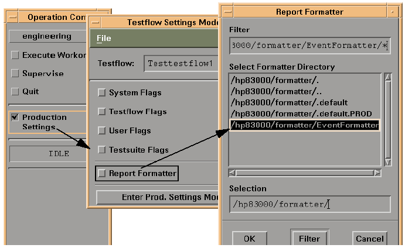

Selecting the EventFormatter
The EventFormatter is a report formatter provided by the SmarTest to process the data which is logged to the data log stream with the event data logging system. You can select the "EventFormatter" as shown below:
- Select the "Production Test Settings" button in the Operation Control window. Then the "Testflow Settings Mode" window opens.
- Select the "Report Formatter" button in the "Testflow Settings Mode" window. Then the "Report Formatter" dialog opens.
- Select the "EventFormatter" and click "OK" in the "Report Formatter" dialog.
